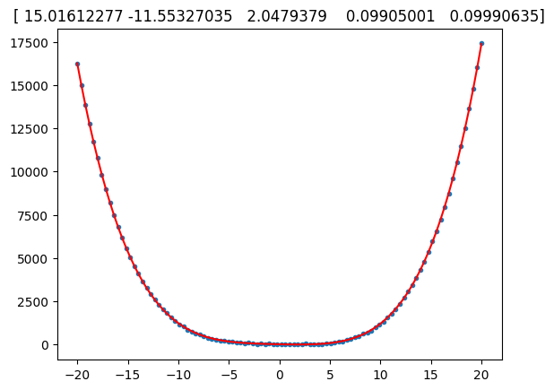

import numpy as np
import matplotlib.pyplot as plt
from numpy.polynomial import polynomial as P
M = 100;
N = 4;
x = np.linspace(-20, 20, M)
X = np.fliplr(np.vander(x , N + 1))
# for i in range(N+1):
# X[:,i] = x**i
noise = 20 * np.random.randn(M)
beta = [18, -12, 2, 0.1, 0.1];
y = np.dot(X, beta) + noise
beta_r = np.linalg.solve(X.T.dot(X), X.T.dot(y))
y_r = np.dot(X, beta_r)
plt.plot(x, y,'.')
plt.plot(x, y_r, 'r')
plt.title(str(beta_r))
plt.show()
def plot_something(p):
fig, ax = plt.subplots()
ax.plot(p, 'o')
ax.set_title('Random')
plt.show()
beta_r, stats = P.polyfit(x, y, 4, full=True)
y_r = np.dot(X, beta_r)
plt.plot(x, y,'.')
plt.plot(x, y_r, 'r')
plt.title(str(beta_r))
plt.show()
help(P.polyfit)

Help on function polyfit in module numpy.polynomial.polynomial:
polyfit(x, y, deg, rcond=None, full=False, w=None)
Least-squares fit of a polynomial to data.
Return the coefficients of a polynomial of degree `deg` that is the
least squares fit to the data values `y` given at points `x`. If `y` is
1-D the returned coefficients will also be 1-D. If `y` is 2-D multiple
fits are done, one for each column of `y`, and the resulting
coefficients are stored in the corresponding columns of a 2-D return.
The fitted polynomial(s) are in the form
.. math:: p(x) = c_0 + c_1 * x + ... + c_n * x^n,
where `n` is `deg`.
Parameters
----------
x : array_like, shape (`M`,)
x-coordinates of the `M` sample (data) points ``(x[i], y[i])``.
y : array_like, shape (`M`,) or (`M`, `K`)
y-coordinates of the sample points. Several sets of sample points
sharing the same x-coordinates can be (independently) fit with one
call to `polyfit` by passing in for `y` a 2-D array that contains
one data set per column.
deg : int or 1-D array_like
Degree(s) of the fitting polynomials. If `deg` is a single integer
all terms up to and including the `deg`'th term are included in the
fit. For NumPy versions >= 1.11.0 a list of integers specifying the
degrees of the terms to include may be used instead.
rcond : float, optional
Relative condition number of the fit. Singular values smaller
than `rcond`, relative to the largest singular value, will be
ignored. The default value is ``len(x)*eps``, where `eps` is the
relative precision of the platform's float type, about 2e-16 in
most cases.
full : bool, optional
Switch determining the nature of the return value. When ``False``
(the default) just the coefficients are returned; when ``True``,
diagnostic information from the singular value decomposition (used
to solve the fit's matrix equation) is also returned.
w : array_like, shape (`M`,), optional
Weights. If not None, the weight ``w[i]`` applies to the unsquared
residual ``y[i] - y_hat[i]`` at ``x[i]``. Ideally the weights are
chosen so that the errors of the products ``w[i]*y[i]`` all have the
same variance. When using inverse-variance weighting, use
``w[i] = 1/sigma(y[i])``. The default value is None.
.. versionadded:: 1.5.0
Returns
-------
coef : ndarray, shape (`deg` + 1,) or (`deg` + 1, `K`)
Polynomial coefficients ordered from low to high. If `y` was 2-D,
the coefficients in column `k` of `coef` represent the polynomial
fit to the data in `y`'s `k`-th column.
[residuals, rank, singular_values, rcond] : list
These values are only returned if ``full == True``
- residuals -- sum of squared residuals of the least squares fit
- rank -- the numerical rank of the scaled Vandermonde matrix
- singular_values -- singular values of the scaled Vandermonde matrix
- rcond -- value of `rcond`.
For more details, see `numpy.linalg.lstsq`.
Raises
------
RankWarning
Raised if the matrix in the least-squares fit is rank deficient.
The warning is only raised if ``full == False``. The warnings can
be turned off by:
>>> import warnings
>>> warnings.simplefilter('ignore', np.RankWarning)
See Also
--------
numpy.polynomial.chebyshev.chebfit
numpy.polynomial.legendre.legfit
numpy.polynomial.laguerre.lagfit
numpy.polynomial.hermite.hermfit
numpy.polynomial.hermite_e.hermefit
polyval : Evaluates a polynomial.
polyvander : Vandermonde matrix for powers.
numpy.linalg.lstsq : Computes a least-squares fit from the matrix.
scipy.interpolate.UnivariateSpline : Computes spline fits.
Notes
-----
The solution is the coefficients of the polynomial `p` that minimizes
the sum of the weighted squared errors
.. math:: E = \sum_j w_j^2 * |y_j - p(x_j)|^2,
where the :math:`w_j` are the weights. This problem is solved by
setting up the (typically) over-determined matrix equation:
.. math:: V(x) * c = w * y,
where `V` is the weighted pseudo Vandermonde matrix of `x`, `c` are the
coefficients to be solved for, `w` are the weights, and `y` are the
observed values. This equation is then solved using the singular value
decomposition of `V`.
If some of the singular values of `V` are so small that they are
neglected (and `full` == ``False``), a `RankWarning` will be raised.
This means that the coefficient values may be poorly determined.
Fitting to a lower order polynomial will usually get rid of the warning
(but may not be what you want, of course; if you have independent
reason(s) for choosing the degree which isn't working, you may have to:
a) reconsider those reasons, and/or b) reconsider the quality of your
data). The `rcond` parameter can also be set to a value smaller than
its default, but the resulting fit may be spurious and have large
contributions from roundoff error.
Polynomial fits using double precision tend to "fail" at about
(polynomial) degree 20. Fits using Chebyshev or Legendre series are
generally better conditioned, but much can still depend on the
distribution of the sample points and the smoothness of the data. If
the quality of the fit is inadequate, splines may be a good
alternative.
Examples
--------
>>> np.random.seed(123)
>>> from numpy.polynomial import polynomial as P
>>> x = np.linspace(-1,1,51) # x "data": [-1, -0.96, ..., 0.96, 1]
>>> y = x**3 - x + np.random.randn(len(x)) # x^3 - x + Gaussian noise
>>> c, stats = P.polyfit(x,y,3,full=True)
>>> np.random.seed(123)
>>> c # c[0], c[2] should be approx. 0, c[1] approx. -1, c[3] approx. 1
array([ 0.01909725, -1.30598256, -0.00577963, 1.02644286]) # may vary
>>> stats # note the large SSR, explaining the rather poor results
[array([ 38.06116253]), 4, array([ 1.38446749, 1.32119158, 0.50443316, # may vary
0.28853036]), 1.1324274851176597e-014]
Same thing without the added noise
>>> y = x**3 - x
>>> c, stats = P.polyfit(x,y,3,full=True)
>>> c # c[0], c[2] should be "very close to 0", c[1] ~= -1, c[3] ~= 1
array([-6.36925336e-18, -1.00000000e+00, -4.08053781e-16, 1.00000000e+00])
>>> stats # note the minuscule SSR
[array([ 7.46346754e-31]), 4, array([ 1.38446749, 1.32119158, # may vary
0.50443316, 0.28853036]), 1.1324274851176597e-014]